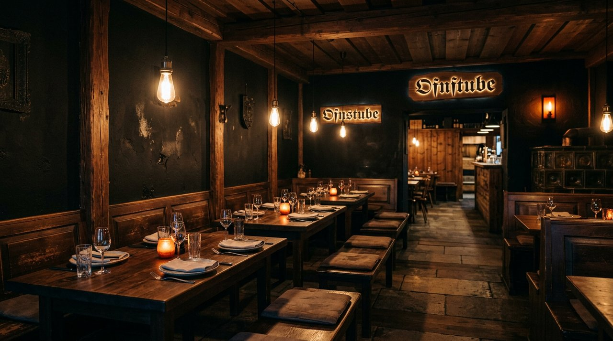
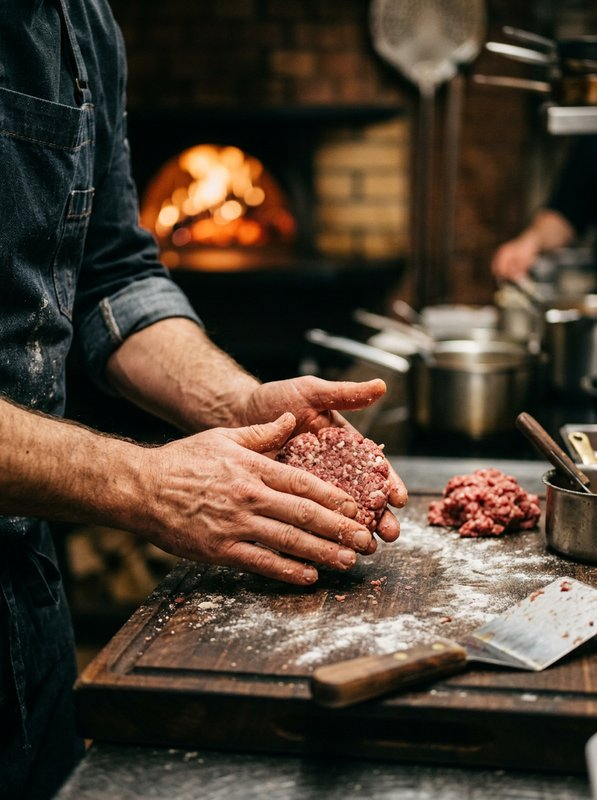
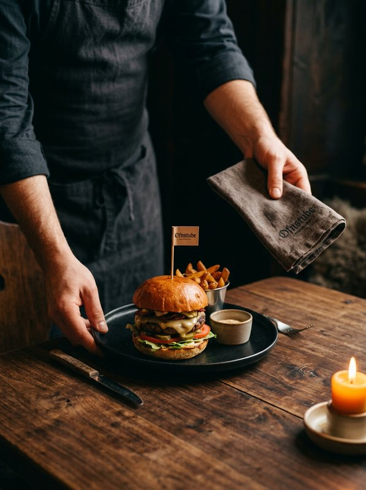
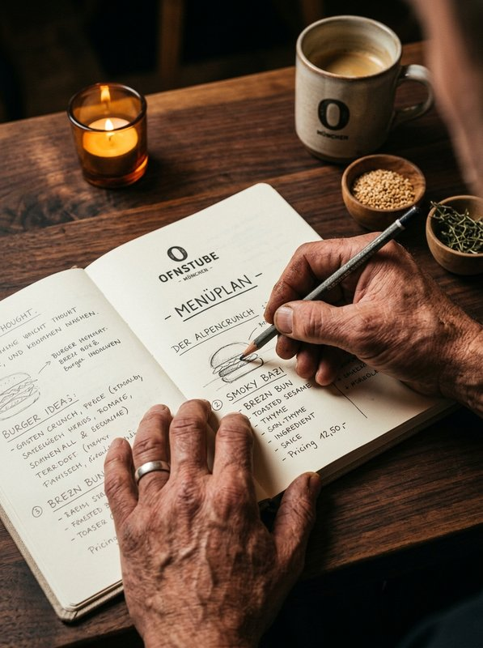

Unsere Geschichte
Über Ofnstube
Wie aus einer Skizze auf einer Serviette ein Craft-Burger-Restaurant mit Stube-Seele wurde
Handwerk
Aus dem Ofen, in die Stube
Ofnstube ist aus einer einfachen Überzeugung entstanden: Ein guter Burger braucht kein Spektakel, sondern Handwerk. Der Name verbindet zwei bayerische Wörter — den Ofen und die Stube. Der Ofen steht für die Hitze, in der das Patty entsteht, die Stube für den warmen Raum, in dem man sich wohlfühlt und bleibt.
Unser Fleisch wolfen wir jeden Tag frisch. Gemüse, Käse und Brot holen wir von Höfen und Handwerksbetrieben aus dem Münchner Umland — kurze Wege, bekannte Gesichter, ehrliche Zutaten. Auf Zusatzstoffe verzichten wir bewusst, weil ein Patty vor allem nach Rind schmecken soll und nicht nach Aroma.
Die Glut in unserem Ofen ist kein Effekt für Fotos, sondern unsere Methode. Wir liefern nicht aus — Ofnstube ist ein Ort zum Hinsetzen. Wer zu uns kommt, nimmt sich Zeit, isst in Ruhe und geht satt und zufrieden wieder hinaus.

Der Weg
Vom Gedanken zur Glut
Vier Stationen, die aus einer Idee ein Restaurant gemacht haben
Die Idee
Zwei Köche, eine Skizze auf einer Serviette und die Frage, warum München keinen Burger mit echter Stube-Seele hat. Aus dieser Frage wurde ein Plan.
Die Glut
Wir testen Patties, Saucen und Buns — Woche für Woche, bis das Rezept sitzt. Im Zentrum steht ein Ofen, gebaut für die Glut und das Garen über offener Hitze.
Der Umbau
Eine alte Gaststube in der Isarvorstadt wird zur Ofnstube. Viel Holz, warmes Licht und ein offener Tresen, an dem man der Küche zusehen kann.
Die Stube
Ofnstube hat geöffnet — sieben Signature-Patties, ehrliche Beilagen und ein Raum voller Wärme, in dem Gäste gern länger bleiben.
Wofür wir stehen
Vier Dinge, die uns wichtig sind
Werte, die in jedem Patty und an jedem Tisch spürbar sein sollen
Handwerk
Täglich frisch gewolfte Patties, über der Glut gegart. Wir nehmen uns Zeit für die Schritte, die man später schmeckt.
Regionalität
Gemüse, Käse und Brot kommen von Höfen und Betrieben aus dem Münchner Umland — kurze Wege und bekannte Lieferanten.
Ohne Zusatzstoffe
Wir backen und kochen ohne Geschmacksverstärker oder künstliche Aromen. Ein Patty soll nach Rind schmecken, nicht nach Labor.
Gastfreundschaft
Eine Stube ist ein Ort zum Bleiben. Wir wollen, dass Gäste sich willkommen fühlen und gern wiederkommen.
Die Stube-Crew
Menschen hinter der Glut
Drei Bereiche, ein Team — von der Küche bis zum Gastgeben

Küchenleitung
Patties & Glut
Verantwortet die Karte, die Rezepte und die Glut im Ofen — vom täglichen Wolfen bis zum letzten Burger des Abends.

Service & Gastgeben
Stube & Gäste
Sorgt dafür, dass jeder Gast sich willkommen fühlt — von der Begrüßung an der Tür bis zur Empfehlung an den Tisch.

Gründung & Konzept
Idee & Karte
Hat die erste Skizze gezeichnet und hält die Idee zusammen — vom Konzept der Stube bis zur Auswahl der Lieferanten.
Hinweis — die Team-Fotos sind Platzhalter für den R&D-Prototyp. Sie werden vor einer Veröffentlichung durch echte Aufnahmen des Restaurant-Teams ersetzt.
Komm vorbei
Setz dich an die Glut
Am besten lernt man Ofnstube am Tisch kennen — reservier deinen Platz und überzeug dich selbst